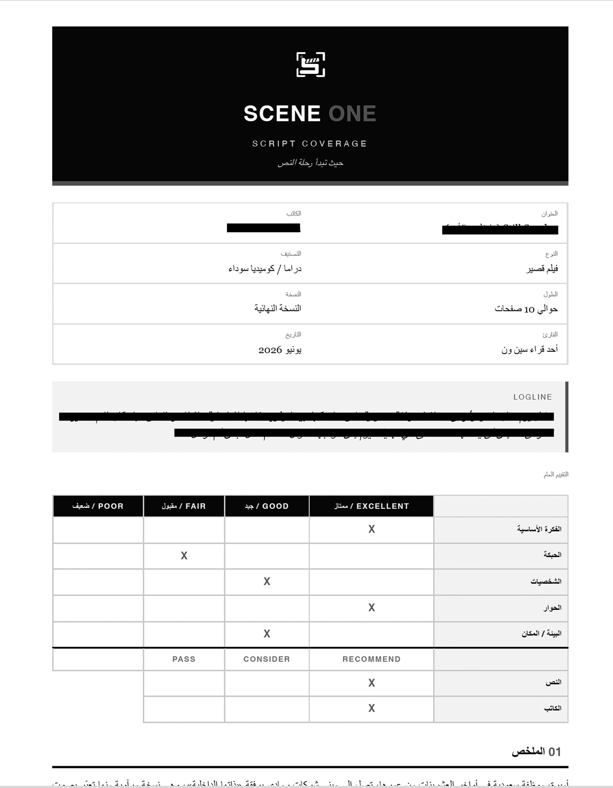

ما هي تغطية النصوص السينمائية؟
الكتابة رحلة طويلة يقضي خلالها الكاتب وقتًا مع شخصياته وأفكاره، محاولًا أن يحوّل ما يشعر به إلى قصة تصل للآخرين. لكن يبقى السؤال الأهم: هل نجح النص في إيصال فكرته وأثره إلى القارئ؟
هنا يأتي دور تغطية النص. وهي قراءة مهنية للنص السينمائي، يقدّمها قارئ مختص من خلال تقرير يوضّح نقاط القوة، والجوانب التي تحتاج إلى تطوير، وما قد لا يصل للقارئ بالشكل المقصود.
من هو القارئ في منصة SCENE ONE
من يقف وراء هذه الملاحظات والتحليلات؟ غالبًا ما يكونون مجموعةً من المحترفين ذوي الخبرة والمواهب الصاعدة في صناعة السينما. هؤلاء هم قرّاء النصوص أو مستشارو السيناريو. وفي أفضل الحالات، يكونون كتّابًا أو صنّاع أفلام لديهم خبرة فعلية في مشاريع أُنتجت أو نُشرت، ما يمنحهم معرفة عميقة تساعدهم على تقديم ملاحظات دقيقة وقادرة على تطوير النص بشكل ملموس.
لكن الأمر لا يقتصر على أصحاب الخبرات الطويلة فقط. فهناك أيضًا أصوات جديدة في المجال، مثل المشاركين في برامج الإرشاد والتدريب أو الكتّاب الطموحين الذين ما زالوا في بداية مسيرتهم. هؤلاء يقدّمون وجهات نظر جديدة ومختلفة، ويخوضون بدورهم رحلة التعلّم نحو الاحتراف.
صحيح أن الخبرة تلعب دورًا مهمًا في عمق الملاحظات وجودتها، إلا أن وجود هذه المواهب الصاعدة ضروري للحفاظ على حيوية الصناعة وتنوّعها. سواء كان القارئ خبيرًا أمضى سنوات طويلة في المجال أو موهبة واعدة في بداياتها، فإن لكلٍّ منهم دورًا فريدًا في المساهمة بصناعة القصص التي نحبها.
ماذا يحتوي التقرير؟
تخيّل التغطية السينمائية كخريطة تفصيلية لنصك، تُسلّط الضوء على عناصره المختلفة مثل الأصالة، والحبكة، والشخصيات، والإيقاع، والثيم، والنبرة، إلى جانب عناصر أساسية أخرى كمنطق الأحداث وجودة التنفيذ. يُقيّم كل عنصر على حدة، لكن قيمته الحقيقية تظهر عند النظر إلى كيفية تفاعله مع بقية العناصر، لتكوين صورة متكاملة عن نقاط قوة النص وإمكاناته وفرص تطويره.
أهم جوانب التقييم والتحليل
1. جانب تطويري: يركّز على تحسين المسودة وتحديد أولويات التعديل.
2. جانب تجهيزي: معرفة ما إذا كان النص مناسبًا للتقديم إلى جهات الإنتاج، المسابقات، المعامل أو صناديق الدعم.
3. جانب إنتاجي: النظر إلى حجم التنفيذ والتحديات الإنتاجية.
4. جانب سوقي: تحديد الجمهور، النوع، ومدى ملاءمته للسوق السعودي.
درجات التقييم في التغطية السينمائية
قراءة ما وراء الأرقام والتوصيات
التغطية السينمائية تجمع بين التقييم الموضوعي والانطباع الشخصي للقارئ. يمكن النظر إلى التقييم على أنه انعكاس لمدى استجابة القارئ للنص؛ أحيانًا يكون إشادة بنقاط قوته، وأحيانًا أخرى دعوة لتطوير بعض جوانبه. لذلك نادرًا ما تكون نتائج التقييم حاسمة أو مطلقة، بل تقع غالبًا في مساحة أوسع من التدرّج والتفسير.
يشير هذا التقييم إلى أن النص يحتاج إلى مزيد من التطوير قبل أن يصبح جاهزًا. غالبًا ما تتعلق الملاحظات بعناصر مثل الحبكة، أو الشخصيات، أو الأصالة.
يعني أن النص يحتوي على عناصر واعدة تستحق الاهتمام، لكنه لا يزال بحاجة إلى بعض التحسينات للوصول إلى إمكاناته الكاملة.
أعلى درجات التقييم، ويُمنح للنصوص التي تتميز بقصة قوية وتنفيذ متقن. ومع ذلك، يظل هناك دائمًا مجال للتطوير والتحسين.

مثال بصري يوضح شكل التقرير